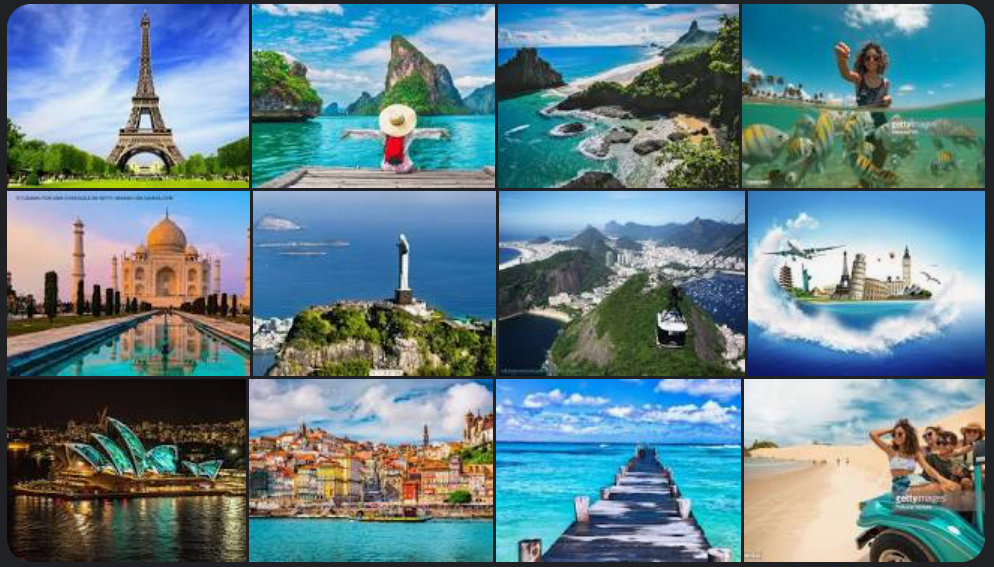

Bem vindo a Euro Tur
Sobre nós
Viagem que se faz durante um período de tempo; passeio: estava precisando fazer um tour pela Europa. Passeio breve: fez um tour pelas caves de vinho do Porto. [Música] Viagem com um roteiro programado que, feita por um cantor, artista, banda etc., tem o objetivo de divulgar o trabalho deste artista; turnê. [Figurado] Caminho que se faz com o objetivo de conhecer determinado conteúdo: fazer um tour pela gastronomia. [Artes] Movimento de dança; volta, giro. [Gramática] A palavra tour é pronunciada da seguinte forma: /tur/. Etimologia (origem da palavra tour). A palavra tour tem sua origem no francês "tour", e possui o mesmo sentido.
